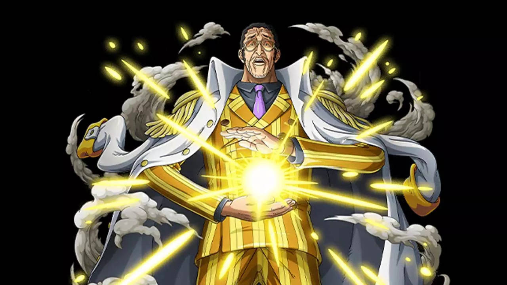

References to Amaterasu in Media
| Media Type | Description | Image |
|---|---|---|
| Video Game | One could argue is one of the most famous portrayals, Amaterasu is the main character of the game Okami (2006). The game follows her journey of restoring life to the world by battling evil forces. | |
| Video Game | Another video game Amaterasu appears in is Smite, a mutliplayer online battle area (MOBA) game. Her abilities focus on providing light and power to her allies while damaging and blinding the enemy. | |
| Anime/Manga | Did you know? In the Naruto series, a powerful technique used by characters Itachi Uchiha and Sasuke Uchiha is called Amaterasu, a visual representation of the sun goddess's immense and fearsome strength, which is reflected by the technique's black flames that can reduce anything to ash. | |
| Anime/Manga | In the manga One Piece, Amaterasu is referenced through Admiral Kizaru, whose Devil Fruit power allows him to move at the speed of light, and although not a direct reference, the theme of light and sun is an indirect reference to the goddess. |  |
Did you find the Easter Egg?
Select the correct answer!